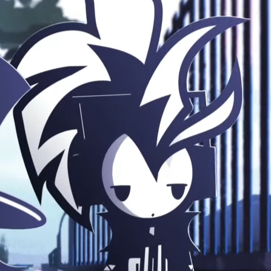

"Ambitious, kind boy. Passionate about his views and desperate to do good in the world. Calls his mom every day. Goes to church every Sunday. Eats too much chicken. Let’s hope nothing bad happens to him!" Depricated Cast PageDepricated Cast Page
Chicken Man
| Also Known As | Levy |
|---|---|
| Gender | Male |
| Significant Other | Dove |
Part of the original cast, Chicken Man is college student aiming to become a Marine Biologist. He is Hat's object of desire and he really likes chicken.
Appearance
He typically wears a black pants and a hoodie with "89" on the front and a rectangle symbol on the side. He has a black and white mohawk underneath his black beanie and headphones.
Personality
Early Depictions
As seen in his first animation apperance, Chicken Man is shown to be tired of Hat. He is extremely nonchalant, even to the sight of Hat's murders which imply that it happens frequently.
Later Depictions
Chicken Man is an extremely hard working and dedicated individual. TWOLH show cases his desire to become a marine biologist but is struggling with his classes.
Chicken Man befriends Hat purely out of kindness and does not reciprocate Hat's romantic feelings. He introduced Dove to Hat and is completely unaware of Hat's hand in his girlfriend's demise.
Featured In
- For You
- Double Dawn | The World of Literal Hat
- Prologue | The World of LiteralHat
- Animal In Me
- Pull My Devil Trigger
- Warmer in the Basement
- Absolute territory